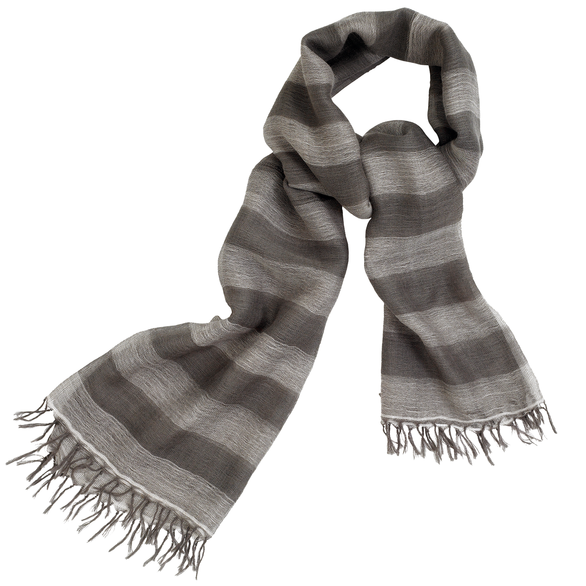
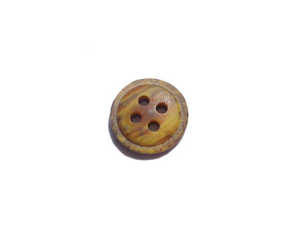
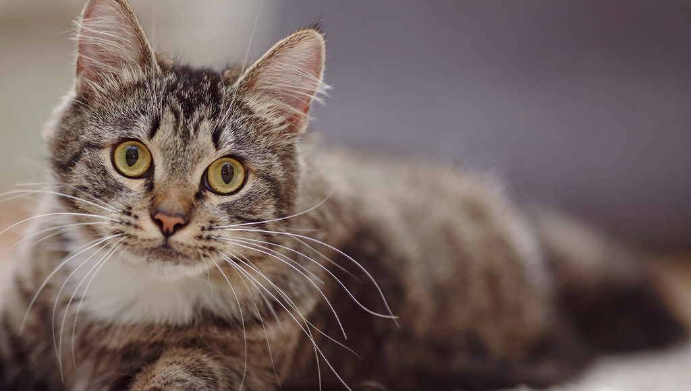
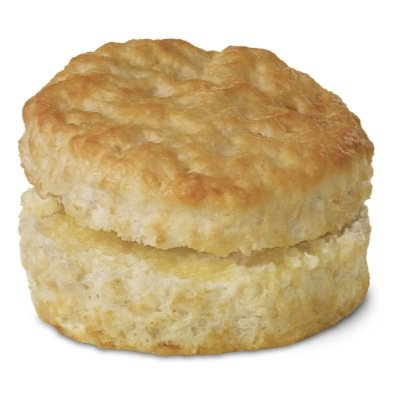

5 of My Favorite Tourist Traps that Have Sentimental Value to Me!
Number 1. World’s Longest Scarf -- Ippississm, Mississippi:
Now, you may be thinking to yourself, “Why would anyone in Mississippi need a scarf?” I don’t know either. And neither did Ralph. But that one sultry evening we spent wrapped up in the soft wool under that scarf Kississipping was the best night of HISsissippi’s life
We never wanted it to end, and for Ralph, it never did.
Number 2. Worlds Smallest Button -- Pucksawatset, Iowa:
If you’re ever in Pucksawatset, you must check out the world's tiniest button! You may be thinking to yourself, “How tiny can a button really be?” And let me tell you, it can be really small. At the Buttonhole Bar and Grill located at truckstop twenty-seven on interstate forty-five, I met Suzy Spanson. I asked Suzy how small she thought a button could really be. She said “not that small.” Wrong answer, Suzy.
Number 3. Most Cats in One Place -- Parma, Ohio:
Grandma Gershwin is known by the locals of Parma, Ohio for having over 3,000 square feet of feline in her 2,500 square foot home. Fun fact, every single one is named Larry. Funnily, enough, so was my lover that night. Me and Larry (NOT a cat) had the VIP tour of Granny’s litter box, and spent the evening in her bedroom. After a night like that, Larry was really out of breath. Like completely out of breath. Larry was no longer breathing. Thankfully, two birds were killed with one stone, the body disappeared and Larry (NOT the human) had a delicious lunch.
Number 4. The Oldest Biscuit -- Unincorporated Township, West Virginia:
Welcome yourself to the god-fearing oasis of Highway Exit 26-B where the world's oldest biscuit is hailed as a divine idol. The Biscuit arose in 1862, where the Biscuit and its folklore passed hands between Union and Confederate soldiers, remaining uneaten and preserved for centuries. Keep your politics out of my biscuit, they said. I'd risk it for The Biscuit, they said.
Number 5. New York’s First Second Largest Baby
Alas, our national tour comes to an end. However, what must be a moment for solemn reflection is made all the brighter in light of the memories I made along the way. Terry at the World’s Fourth Largest Garbanzo Bean, you will be dearly missed. Martha at Utah’s Least Incestuous Family, you and your brother were such lovely company. But all good things must come to an end. After disposing of the World’s First Largest Baby in a much-televised political wrestling match, Rodney Parish was able to reclaim his title of Infantus Maximus. I killed someone there.